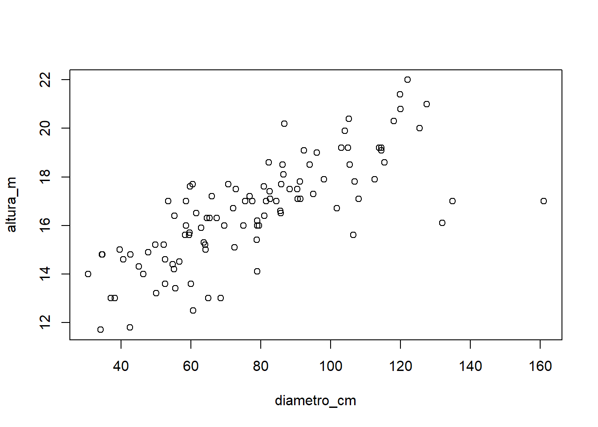

Capítulo 3 Análise de Componentes Principais
Felipe Micail da Silva Smolski
A técnica de Componentes Principais retoma informações de uma base de dados multivariada, transformando estes dados em variáveis de número igual ou inferior à amostra inicial e denominados “componentes principais”. Estes por sua vez, correspondem à combinação dos dados originais, sendo que representam uma redução de dimensionalidade dos dados originais em dois ou três componentes, identificando as direções pelas quais a variação dos dados são máximas, apresentando graficamente os resultados conforme Kassambara (2017b). Ainda segundo este autor, são propósitos resumidos da anáise dae componentes principais:
- Identificação de padrões ocultos dos dados;
- Redução de dimensionalidade, pela diminuição da redundância nos dados;
- Identificar variáveis correlacionadas.
3.1 Preparação dos dados
Carregando pacotes exigidos: ggplot2
Attaching package: 'ggplot2'The following objects are masked from 'package:psych':
%+%, alphaWelcome! Related Books: `Practical Guide To Cluster Analysis in R` at https://goo.gl/13EFCZ
Attaching package: 'factoextra'The following object is masked from 'package:agricolae':
hcut X100m Long.jump Shot.put High.jump X400m X110m.hurdle Discus
SEBRLE 11.04 7.58 14.83 2.07 49.81 14.69 43.75
CLAY 10.76 7.40 14.26 1.86 49.37 14.05 50.72
BERNARD 11.02 7.23 14.25 1.92 48.93 14.99 40.87
YURKOV 11.34 7.09 15.19 2.10 50.42 15.31 46.26
ZSIVOCZKY 11.13 7.30 13.48 2.01 48.62 14.17 45.67
McMULLEN 10.83 7.31 13.76 2.13 49.91 14.38 44.41
Pole.vault Javeline X1500m Rank Points Competition
SEBRLE 5.02 63.19 291.7 1 8217 Decastar
CLAY 4.92 60.15 301.5 2 8122 Decastar
BERNARD 5.32 62.77 280.1 4 8067 Decastar
YURKOV 4.72 63.44 276.4 5 8036 Decastar
ZSIVOCZKY 4.42 55.37 268.0 7 8004 Decastar
McMULLEN 4.42 56.37 285.1 8 7995 Decastar3.2 Criação dos componentes


**Results for the Principal Component Analysis (PCA)**
The analysis was performed on 23 individuals, described by 10 variables
*The results are available in the following objects:
name description
1 "$eig" "eigenvalues"
2 "$var" "results for the variables"
3 "$var$coord" "coord. for the variables"
4 "$var$cor" "correlations variables - dimensions"
5 "$var$cos2" "cos2 for the variables"
6 "$var$contrib" "contributions of the variables"
7 "$ind" "results for the individuals"
8 "$ind$coord" "coord. for the individuals"
9 "$ind$cos2" "cos2 for the individuals"
10 "$ind$contrib" "contributions of the individuals"
11 "$call" "summary statistics"
12 "$call$centre" "mean of the variables"
13 "$call$ecart.type" "standard error of the variables"
14 "$call$row.w" "weights for the individuals"
15 "$call$col.w" "weights for the variables" A variância retida em cada um dos compomentes é medida pelos “autovalores” (eigenvalues), que podem ser extraídos utilizando a função get_eigenvalue():
eigenvalue variance.percent cumulative.variance.percent
Dim.1 4.1242 41.242 41.24
Dim.2 1.8385 18.385 59.63
Dim.3 1.2391 12.391 72.02
Dim.4 0.8194 8.194 80.21
Dim.5 0.7016 7.016 87.23
Dim.6 0.4229 4.229 91.46
Dim.7 0.3026 3.026 94.48
Dim.8 0.2745 2.745 97.23
Dim.9 0.1552 1.552 98.78
Dim.10 0.1220 1.220 100.00Autovaloes superiores a 1 indicam que a variância do componente é superior ao que representaria a variância dos dados originais, sendo possível utilizar inclusive como ponto de corte para decidir quantos componentes utilizar. Observa-se que no exemplo acima, foram criados 10 componentes principais, dos quais os três primeiros explicam 72,02% da variação.

Dim.1 Dim.2 Dim.3 Dim.4 Dim.5
X100m -0.8506 -0.17940 0.3016 0.03357 -0.1944
Long.jump 0.7942 0.28086 -0.1905 -0.11539 0.2332
Shot.put 0.7339 0.08540 0.5176 0.12847 -0.2488
High.jump 0.6101 -0.46521 0.3301 0.14455 0.4027
X400m -0.7016 0.29018 0.2835 0.43083 0.1039
X110m.hurdle -0.7641 -0.02474 0.4489 -0.01690 0.2242Referências
Kassambara, Alboukadel. 2017b. Practical Guide To Principal Component Methods in R. 1 ed. USA: STHDA.